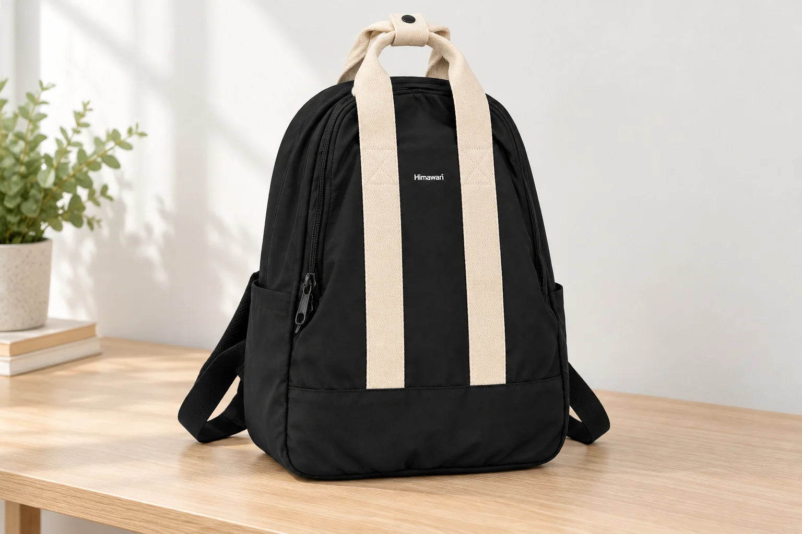
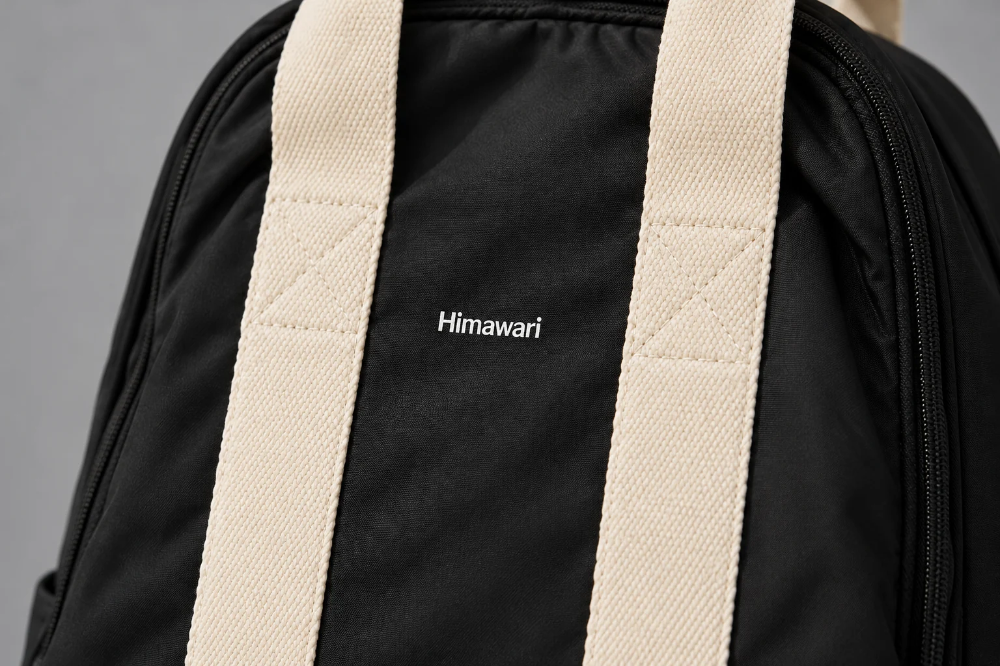
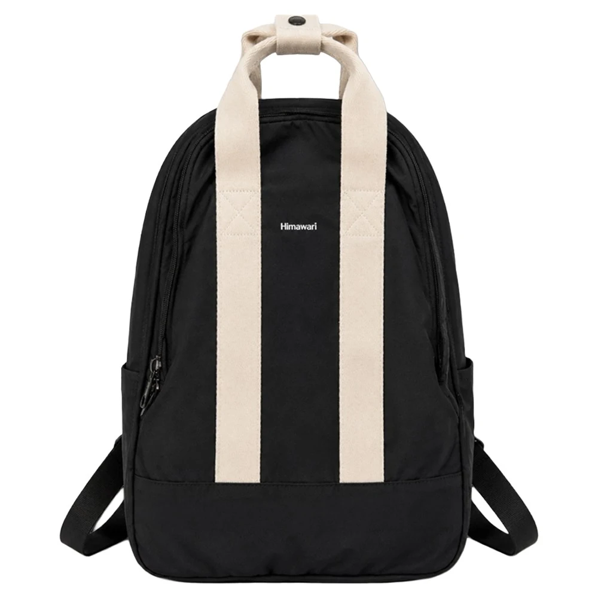

백팩 사진의 광택만 보고 나일론인지 알 수 있을까

검은 백팩 사진을 확대하다가 몸판 한쪽에서 은은한 빛을 발견하면 나일론을 떠올릴 수 있습니다. 곁에 놓인 아이보리 띠는 표면이 더 거칠어 보이니 다른 섬유라고 짐작하기도 합니다. 눈에 보이는 차이는 있지만 그 차이만으로 소재명을 채워 넣을 근거는 부족합니다. 사진에서 마음에 든 표면과 제품에 적힌 재료를 따로 확인하면 구매 후보를 더 정확하게 비교할 수 있습니다.
No.2505 블랙의 실제 정면 사진에는 검은 몸판 위로 아이보리 웨빙 두 줄이 길게 내려옵니다. 두 줄 사이에는 작은 흰색 Himawari 로고가 있습니다. 띠에서는 가느다란 결이 눈에 띄고 몸판은 상대적으로 매끈해 보입니다. 제품 소재 정보에는 겉감 나일론, 안감 폴리에스터로 적혀 있습니다. 각각 어느 부위의 재료인지 함께 확인할 수 있습니다.
반짝이는 부분이 있으면 나일론일까
사진의 밝은 부분은 그 장면에서 빛을 받은 표면입니다. 같은 가방에서도 면의 방향과 조명에 따라 반짝이는 위치가 달라질 수 있습니다. 한쪽이 밝고 다른 쪽이 어둡다고 그 경계에서 섬유가 바뀌었다고 볼 수는 없습니다. 반대로 다른 사진에서 광택이 약하게 보인다는 이유로 나일론 표기를 의심할 근거도 생기지 않습니다.
No.2505의 겉감이 나일론이라고 말할 근거는 제품에 적힌 소재 정보입니다. 그 이름을 확인할 때 사진 속 검은 면의 반짝임에 기대지는 않습니다. 소재명이 빠진 다른 백팩을 고를 때도 비슷한 광택을 찾아 같은 나일론으로 분류하면 비교표에 추측이 섞입니다. 재료를 고르는 조건이 있다면 그 칸은 확인될 때까지 비워 두는 편이 정확합니다.

검은 몸판과 아이보리 띠는 같은 섬유일까
앞면의 두 띠와 몸판은 색도 다르고 사진에서 드러나는 결도 다릅니다. 여기까지는 외관을 설명하는 말입니다. 아이보리 띠를 면이라고 부르거나 몸판과 같은 나일론이라고 적으려면 해당 부위의 소재 정보가 필요합니다. 밝은 색이나 거칠어 보이는 결만으로 어느 쪽도 확인되지 않습니다. 웨빙이라는 부품 이름 역시 이 제품의 섬유명을 대신하지 않습니다.
겉감 표기를 읽었다고 바깥에 보이는 모든 부품까지 같은 재료로 묶지는 않습니다. 손잡이와 띠의 섬유가 구매 조건이라면 그 부위를 따로 지정해 물어볼 수 있습니다. 두 줄이 보이는 정면 사진을 기준으로 질문하면 어깨끈이나 안쪽 원단과 혼동을 줄일 수 있습니다. 띠의 재료를 확인하지 못했다면 서로 다른 소재라고 단정하는 설명도 보류합니다.
촘촘하고 매끈해 보이면 방수일까
화면에서 원단 사이의 빈틈을 찾기 어렵다고 물이 통과하지 않는다고 판단할 수는 없습니다. 작은 사진에서는 세부가 충분히 보이지 않을 수 있고 확대해도 원본에 없는 정보를 새로 얻지는 못합니다. 매끈해 보이는 표면을 특정 코팅의 증거로 삼는 일도 마찬가지입니다. 보이지 않는 틈과 확인된 방수 성능은 서로 다른 정보입니다.
이 사진을 보고 조직의 이름이나 실의 굵기, 코팅 유무를 덧붙일 수는 없습니다. 소재에 나일론이라고 적혀 있어도 그 한 단어가 완성된 백팩의 방수 범위를 설명하지는 않습니다. 비를 맞을 상황을 구매 조건에 넣었다면 제품의 별도 사용 안내에서 허용 범위를 읽어야 합니다.
사진과 제품 정보의 근거를 맞춰 보면
같은 백팩에 관한 말이라도 어디에서 확인했는지에 따라 적을 수 있는 범위가 달라집니다. No.2505를 비교 메모에 넣는다면 사진에서 본 외관과 사양으로 확인한 재료를 아래처럼 나누어 둘 수 있습니다.
| 확인할 항목 | 현재 근거 | 적을 수 있는 내용 |
|---|---|---|
| 앞면의 배색 | 실제 정면 사진 | 검은 몸판, 아이보리 웨빙 두 줄, 작은 흰색 로고 |
| 겉감과 안감 | 제품 소재 정보 | 겉감 나일론, 안감 폴리에스터 |
| 웨빙의 섬유 | 부위별 소재 확인 필요 | 색과 표면 모습만 관찰 가능 |
| 코팅과 방수 범위 | 사진으로 확인 불가 | 별도 제품 안내에서 확인할 항목 |
제품의 외부 크기는 가로 30 × 세로 43 × 폭 14cm로 안내됩니다. 이 숫자는 보고 있는 모델의 바깥 크기를 맞춰 보는 데 쓸 수 있습니다. 원단의 두께나 짜임을 계산할 수 있는 수치는 아닙니다. 크기와 소재가 같은 사양표에 놓여 있어도 각각 답하는 질문이 다릅니다.

소재 표시에서는 겉감과 안감을 따로 읽기
소재 표시를 찾으면 재료 이름 앞의 부위명부터 봅니다. No.2505의 표기는 겉감 나일론과 안감 폴리에스터를 각각 가리킵니다. 나일론 백팩이라는 짧은 소개만 메모해 두면 안감의 폴리에스터 표기를 놓치기 쉽습니다. 안쪽 재료가 구매 조건인 사람은 이 생략 때문에 후보를 잘못 고를 수 있습니다.
제품 페이지에서 소재를 확인한 뒤 실물을 받았다면 부착된 표시와도 대조해 볼 수 있습니다. 먼저 주문한 모델과 색상인지 맞추고 겉감과 안감에 적힌 내용을 각각 읽습니다. 페이지와 표시가 다르거나 부위 이름이 모호하면 어느 설명을 따를지 임의로 고르지 않고 판매처에 확인합니다. 다른 색 옵션의 사진이나 비슷한 모델의 표기를 가져와 빈칸을 채우지 않습니다.
겉감과 안감이라는 구분에서 끝나는 안내라면 손잡이, 웨빙, 지퍼 부품의 재료까지 모두 확인한 것으로 기록하지 않습니다. 문의할 때도 소재가 무엇인지 넓게 묻기보다 정면의 아이보리 두 줄에 해당하는 섬유가 무엇인지 적으면 확인할 부위가 좁아집니다. 답을 받았다면 모델과 부위가 함께 드러나는 원래 안내를 보관해 두면 됩니다.
소재를 원하는 이유까지 구매 조건에 남기기
나일론 겉감이 조건이라면 No.2505의 겉감 표기를 비교할 수 있습니다. 광택이 적은 외관을 원한다면 같은 옵션의 실제 사진을 더 보고 실물의 표면을 확인할 기회를 찾는 편이 맞습니다. 방수가 목적이라면 소재 이름 옆에 사용 범위를 별도 질문으로 남깁니다. 원하는 것이 재료인지 겉모습인지 기능인지 적어 보면 어떤 자료가 더 필요한지 구체적으로 드러납니다.
겉감과 안감의 이름이 다르다는 사실만으로 두 섬유의 우열이나 가방의 수명을 매길 수는 없습니다. 사진을 고르는 동안 확인한 것은 외관이고, 소재 표기에서 얻은 것은 각 부위의 재료 이름입니다. No.2505를 후보로 남길 때에는 검은 몸판과 아이보리 띠가 마음에 들었는지, 확인된 겉감과 안감이 자신의 조건에 맞는지를 각각 기록해 보세요.